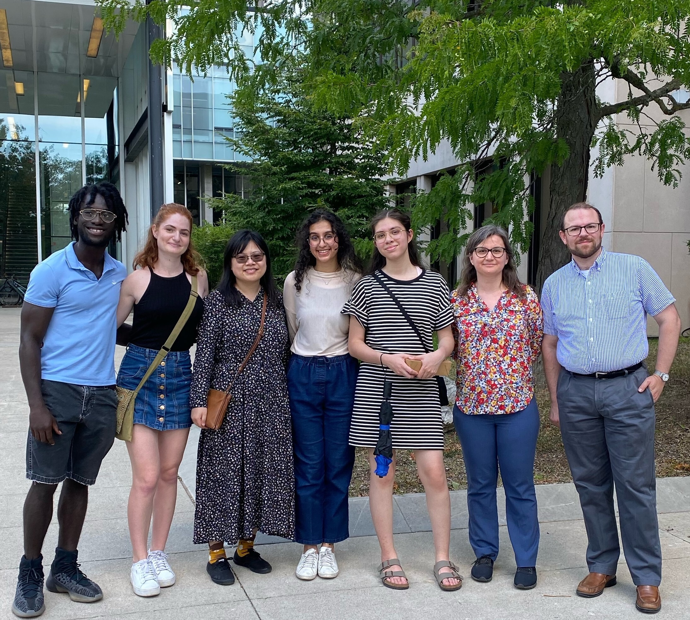
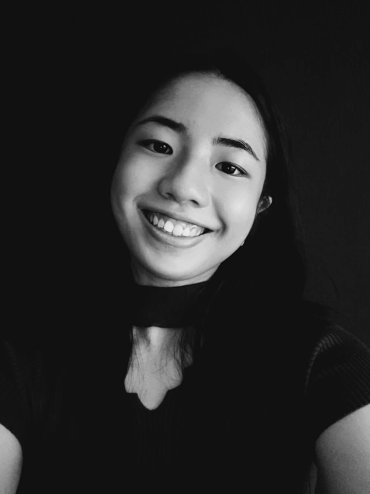
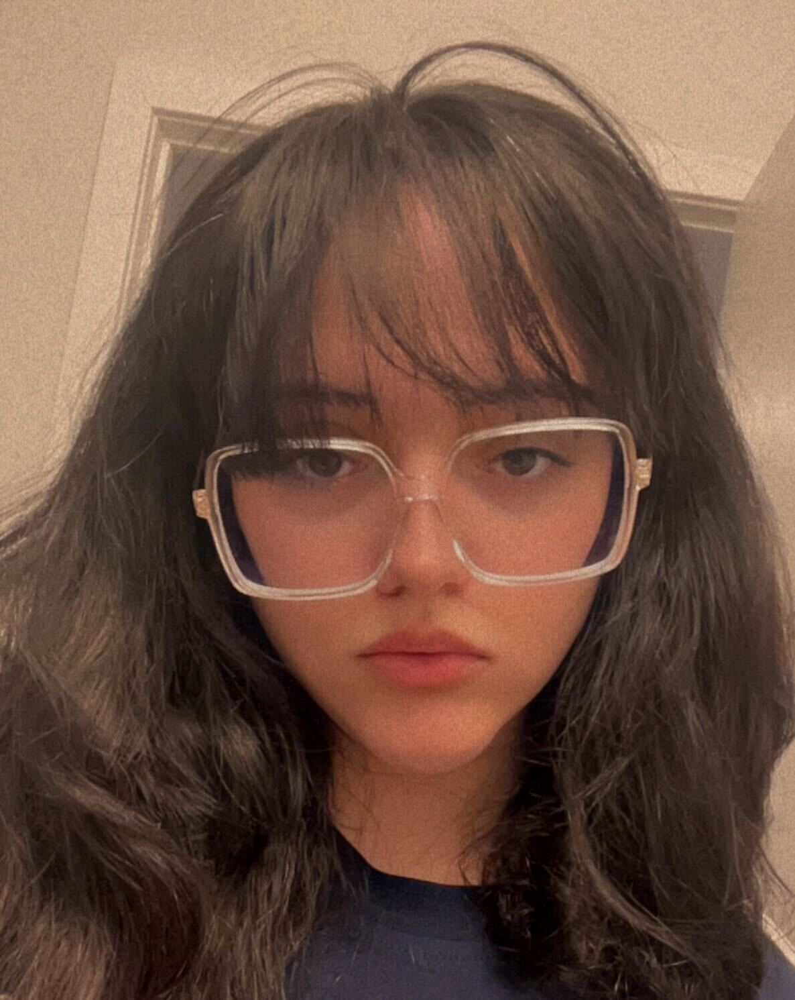
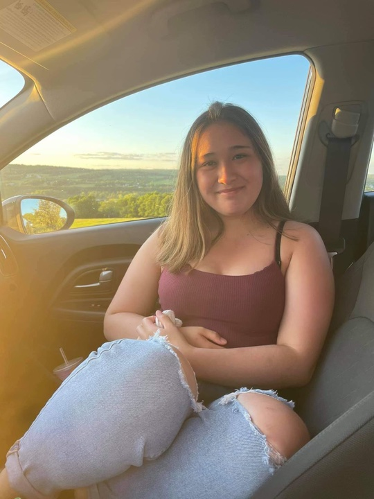

Members of the APPLY lab summer 2022! (from left to right: Dyllan, Silvia, Jiali, Zainab, Meghna, Anna, and Ben)
Directors

Dr. Benjamin Wolfe
Assistant Professor, PsychologyUniversity of Toronto Mississauga
Dr. Wolfe is a co-director of the lab, and his research sits at the intersection of applied and basic vision science.
Recently, he has focused on questions of human visual perception in driving, including how drivers understand their environments and how they acquire the information that leads to their situational awareness.
Dr. Wolfe also works on questions of readablity and legibility for digitally-presented text, and additionally has interests in peripheral vision, saccade planning, visual attention and scene perception.
Dr. Wolfe is an assistant professor in the Psychology Department at the University of Toronto Mississauga, and was a postdoctoral associate at
the Massachusetts Institute of Technology from 2015-2020 with Dr. Ruth Rosenholtz. Dr. Wolfe received his PhD in Psychology from the University of California, Berkeley in 2015, where he was advised by Dr. David Whitney.

Dr. Anna Kosovicheva
Assistant Professor, PsychologyUniversity of Toronto Mississauga
Dr. Kosovicheva is a co-director of the lab, and her research focuses on questions of spatial vision, binocular vision and eye movements. She is particularly interested in questions of visual localization, how we know where things are in the world, and how the visual system determines perceived position under conditions of uncertainty. Dr. Kosovicheva also studies deficits in binocular vision, particularly amblyopia and strabismus, applying psychophysical methods to new assessments. She is an assistant professor in the Psychology Department at the University of Toronto Mississauga, and was a postdoctoral fellow at Northeastern University from 2015-2020 with Dr. Peter Bex. Dr. Kosovicheva received her PhD in Psychology from the University of California, Berkeley in 2015, where she was advised by Dr. David Whitney.
Postdoctoral Fellows

Dr. Jiali Song
Postdoctoral Fellow, PsychologyUniversity of Toronto Mississauga
Jiali is a post-doctoral fellow at the APPLY Lab. Her research interests include how vision and attention contribute to (un)safe driving. She is particularly interested in the contributions of depth perception and peripheral vision to driver behaviour, and how in-car warning systems can help or hinder driving performance. Jiali received her PhD in the department of Psychology, Neuroscience & Behaviour at McMaster University, where she was advised by Dr. Allison Sekuler and Dr. Hong-jin Sun.
Graduate Students
Zainab Haseeb
Zainab is a second-year graduate student at the APPLY Lab. She recently graduated with an Honours Bachelor of Science from the University of Toronto Mississauga in 2022. Her current research involves two main areas: studying how different fonts affect digital text readability to improve accessibility and investigating the mechanisms behind individual differences in peripheral vision. When not in the lab, you can find Zainab either out on a local trail, or immersed in a good book while spending quality time with her cat, Diesel!

Silvia Guidi
Silvia is an incoming first-year graduate student at the University of Toronto Mississauga. She joined the APPLY Lab in May 2021 and is working on a project examining the effects of visual degradation on the detection of road hazards in natural videos.
Undergraduates
Anureet Jeji
Lab ManagerAnny is a fifth-year undergraduate student at the University of Toronto Mississauga. She joined the APPLY Lab in Summer 2023 and is currently working as the lab manager and a research assistant. She is working on a project that looks at attention in videos of road hazards and is trying to sharpen her programming skills with R and MATLAB.

Ido Ziv Li
Ido is a fourth-year undergraduate student at the University of Toronto Mississauga. He joined the APPLY lab in May 2024 as part of the research opportunity program (ROP). He is currently working on a project focusing on drivers' looking behaviour. Outside the lab, Ido enjoys cooking and baking while listening to audiobooks!

Avery Chua
Avery is a fourth-year undergraduate student at the University of Toronto Mississauga. She joined the APPLY Lab in September 2022 as part of the research opportunity program (ROP). Her current project is on road hazards and temporal cues. Outside of the lab and academic life, her hobbies include reading fantasy, writing or journaling, and managing a studygram!

Dorsa Tafazzoli
Dorsa is a fourth-year undergraduate student at the University of Toronto Mississauga. She joined the APPLY Lab in May 2023 as part of the summer research opportunity program (ROP). Her current project is focusing on the effects of highlighting and underlining conditions on reading abilities. Besides academic life and research, she enjoys playing tennis and basketball!

Brooke Lim
Brooke is a fourth-year undergraduate student at the University of Toronto Mississauga. She joined the APPLY Lab in September 2023 as part of the Research Opportunity Program (ROP). She is currently completing her UTEA project examining how different stimulus contrasts and timing parameters affect binocular motion integration in normally-sighted individuals, with the plan to have it available to be tested in patient populations in the future. Besides academic interests, she loves going to blue jays games and trying new foods!

Trassy Cathrina D'Rozario
Trassy is a second-year undergraduate student at the University of Toronto Mississauga (UTM), pursuing a double major in Psychology and Biology, with plans to specialize in Neuroscience. She joined the APPLY lab in May 2024 as an ROP student, where she is currently working on a research project that explores individual differences in visual perception. Through this experience, Trassy aims to enhance her programming and research skills. Outside of her academic pursuits, she enjoys playing competitive PC games, taking long walks in parks, practicing skincare routines, and reading.